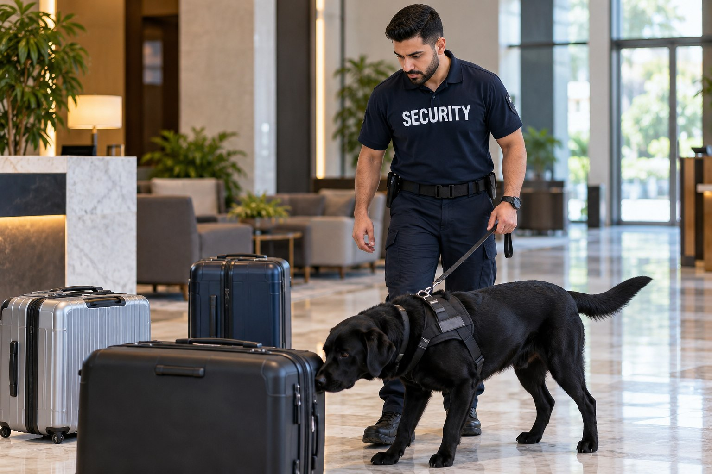

K9 Narcotic Detection

A commercial property manager or event organizer may have concerns involving suspected prohibited substances and want to understand whether a detection service is suitable. The consultation identifies the purpose of the request and the setting in which the team would work. K9 support should be connected to a defined concern rather than added to every security assignment.

A Specialist Detection Service
Paradigm reviews commercial property and event use within its existing service offering. The exact assignment, availability and team qualifications are confirmed directly. This page does not claim a particular certification standard or detection capability without that confirmation. It also does not represent K9 detection as an inventory verification service for licensed cannabis businesses.
Commercial Properties and Event Venues
Properties and venues have different responsibilities to employees, tenants and visitors. A warehouse request is not the same as an event request, and a client’s interest in detection does not automatically establish authority to search every area or person. The service assessment must account for the actual setting and the authorized scope.
K9 narcotic detection can be considered separately from uniformed guarding, visitor management or mobile patrol. Those services provide different kinds of support. A detection team does not take over all security responsibilities at the property, and a general guard assignment does not automatically include K9 support.
Clear Limits and Responsible Communication
The service should be described in terms of the detection work agreed with the client. It is not represented as a guarantee that a property is free of prohibited substances or as a substitute for a lawful investigation. Any concern arising from the assignment requires appropriate communication with the authorized client representative and, where relevant, the appropriate authorities.
The role also needs to respect the distinction between private security and police powers. BSIS publishes California security guard registration and training requirements. That general reference does not establish a universal certification for detection dogs. Clients should request confirmation of the credentials and capabilities relevant to the particular team and assignment.
K9 Security Support in Southern California
Paradigm serves clients in Los Angeles County and San Bernardino County. Businesses and organizers can contact the team to review the concern, the property type and whether K9 narcotic detection is an appropriate available service. The suitability of the assignment is established privately rather than assumed from a broad service label.
Contact Paradigm for a consultation about the detection support you are seeking. We will clarify the service under consideration and distinguish it from other property protection needs. The public description provides a clear starting point while avoiding unsupported promises, sensitive methods or claims that a detection service can establish every fact about an incident.